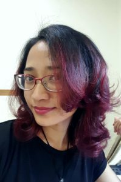

Dylan Edwards
Dylan Edwards is the author of Transposes (Northwest Press, 2012), a biography of queer-identified transmasculine people, which was a Lambda Literary Award Finalist in 2013 for Best Transgender Non-Fiction. His new comic, Politically InQueerect: Old Ghosts and Other Stories (Northwest Press, 2015), is a skeptical ghost story for people who wish Edmund Blackadder were gay. His comics have also appeared in various anthologies, including the Ignatz Award-winning QU33R (Northwest Press, 2013), the Lambda Literary Award-winning No Straight Lines (Fantagraphics, 2012), and the all-queer science fiction and fantasy Beyond Anthology (2015). His current project is Valley of the Silk Sky, a queer YA science fiction webcomic which can be read online at valleyofthesilksky.tumblr.com.
Tawny Fritz
{kind=link}
Melanie Gillman
 Melanie Gillman is a queer, nonbinary cartoonist who specializes in LGBTQ YA comics. They’re the creator of As the Crow Flies (Iron Circus Comics, 2017) and Stage Dreams (Lerner/Graphic Universe, 2019), and are writing the new Steven Universe comics series for Boom Studios. They are also the co-editor and publisher of The Other Side, an anthology of queer paranormal romance comics. Their work has won a gold medal from the Society of Illustrators, and been nominated for an Eisner and an Ignatz. They are currently living in Tulsa, OK, where they are a 2017 fellow in the Tulsa Artist Fellowship program.
Melanie Gillman is a queer, nonbinary cartoonist who specializes in LGBTQ YA comics. They’re the creator of As the Crow Flies (Iron Circus Comics, 2017) and Stage Dreams (Lerner/Graphic Universe, 2019), and are writing the new Steven Universe comics series for Boom Studios. They are also the co-editor and publisher of The Other Side, an anthology of queer paranormal romance comics. Their work has won a gold medal from the Society of Illustrators, and been nominated for an Eisner and an Ignatz. They are currently living in Tulsa, OK, where they are a 2017 fellow in the Tulsa Artist Fellowship program.
Julie Hamilton
 Julie Hamilton is a Denver based graphic designer, illustrator and all-around crafty person. With an eclectic professional background in fashion design, costuming, and architectural drafting, she brings a unique perspective to all her projects. Her artwork, including postcards, stationery, accessories, plushies and other collectibles, is available through her Etsy shop at http://www.etsy.com/shop/TheBottleCapPixie. For more information about upcoming shows please visit http://www.bottlecap-graphics.com.
Julie Hamilton is a Denver based graphic designer, illustrator and all-around crafty person. With an eclectic professional background in fashion design, costuming, and architectural drafting, she brings a unique perspective to all her projects. Her artwork, including postcards, stationery, accessories, plushies and other collectibles, is available through her Etsy shop at http://www.etsy.com/shop/TheBottleCapPixie. For more information about upcoming shows please visit http://www.bottlecap-graphics.com.
Dion Harris
Born in Carbondale, IL, but raised in a “Southern” household in Colorado, DION HARRIS arose from the primordial ooze to make pretty pictures for your eyes to feast upon. His drawing, which began at age 3, carried him through the military. In recent years, he seriously rededicated himself to honing his craft, because creating a comic book has been a life-long dream and art was his first love.
Shoshanah Holl
Shoshanah Holl is a writer first published in 2013, and illustrator who’s worked on everything from boardgames to Christmas stories. She first discovered steampunk through the work of H.G Wells at a young age, around the same time her crippling fear of Morlocks was born.
{kind=link}
Chaz Kemp
Bram Stoker Award finalist Chaz Kemp embraces an Art Nouveau style that incorporates vibrancy and color into fantasy and steampunk art in a way that is rarely seen. As an illustrator, the influence of Alphonse Mucha is evident in his award-winning work that combines the artistic energy of the Roaring 20s with the untamed possibilities of steampunk and fantasy.
{kind=link}
Chaz Kemp is a featured artist in steampunk legend Paul Roland’s book “Steampunk: Back to the Future with the New Victorians”. Amazing Stories magazine featured him in the November 2014 issue, and his work has been seen in other publications such as Steampunk Magazine, Savage Insider and Aurealis. Over the years Chaz has created art for game publishers, sci-fi/fantasy conventions and several book covers including the anthology “Cthulhu Passant” by Travis Heerman & the Oilman’s Daughter by Local Hero Press. In 2012, he illustrated his first graphic novel entitled “Behind These Eyes” written by Guy Anthony De Marco and Peter J. Wacks. The graphic novel was a Bram Stoker Award finalist.
Ariela Kristantina
Ariela is a comic artist from Jakarta, Indonesia. She’s now pursuing her career in comics in America. Ariela was involved in several anthologies before she got her first Marvel book in 2014 as artist for The Logan Legacy 2. Her other works for Marvel include, Wolverines and The X-Men #6, She’s also working for BOOM! Studio with Justin Jordan for Deep State (#1-#8) and for Dark Horse with Brian Wood for Rebels #8. Right now, she’s working on InSexts as the cover and interior artist with Marguerite Bennett as the writer for Aftershock Comics.
{kind=link}
MANDEM
MANDEM is a queer family working under a single artist name. With an academic background in mythology, critical theory, and gender/queer studies, MANDEM works across media and materials, intentionally destabilizing genre. Their art publications include award-winning roleplaying games, CD covers, fantasy novels, board and card games, poetry anthologies, and literary journals. Their internationally-exhibited “Hypermobility” painting series depicts models with connective tissue disorders, treating disabled bodies as valid and beautiful. MANDEM is an art editor at Deaf Poets Society, a journal of deaf and disabled literature and art (DeafPoetsSociety.com). Find MANDEM online at MANDEMart.com.
{kind=link}
Gerry Mulowayi
Gerry Mulowayi is a local Graphic Illustrator in Denver. In his work he work tackles concepts of good vs evil, religion, fantasy and comics. With each new illustration he strives to not repeat or copy any existing form of the concept, or idea. Instead he tries to make each work very unique, expressive and vibrant through an explosion of color.
Stevie Schafer
Stevie Schafer grew up making art, wandering through forests in the Pacific Northwest, and wishing that magic were real. She paints to try and make some of her favorite genres come to life.
{kind=link}
She has more than fifteen years of digital painting under her belt. She studied art and creative writing at the University of Colorado Boulder. Some of her major projects include a previous run of the webcomic Dictionary Girl and work on a storytelling startup called Apparatus.
You’ll find her painting science fiction, fantasy, steampunk, and video game inspired compositions live through twitch.tv as Stevieraedrawn.
Take a peek at some of her work at stevieraedrawn.com/
Christopher Stoll
Born in Texas in 1991, Christopher Stoll’s popular illustrations combine a realistic style of anatomy and motion with a fantastical flair. His childhood years were devoted to exploring the fundamentals of his art using crayons, pencils, and watercolors, though nowadays he mostly uses an old ipad and stylus.
Christopher successfully Kickstarted his first book in 2014, and has since completed two fully illustrated artbooks and transitioned into creative work and crowdfunding full time. Within his work he hopes to fuse the fantastical and the mundane, and aspires to one day close the gap between “high” art, pop culture, and technical illustration.
You can check out his work at- www.stollart.com and catch him at local conventions promoting his new creations.
{kind=link}
Sarin Tatroe
Sarin is a local artist living in Colorado who has been drawing on and off since she can remember. She is currently trying her hand out as a freelance artist after bidding the corporate world farewell to be a stay at home mom. When not “arting”, as she calls it, she loves to daydream and role play in between chasing her pre-schooler around the house.
Her art is mostly a blend of anime/manga style with a little bit of realism injected into her pieces. Copic markers are her current favorite medium of choice. She has played with water color, watercolor pencils, pencils, and many other artsy mediums and has mixed them all together at times.
She likes to wonder what stories people will come up with when diving into her art since she believes that all art has a story. Sarin is currently working on a few personal projects that seem to never have an end or a definite beginning. Her works may be viewed at sariochan.deviantart.com. More recent works are usually able to be viewed at local conventions.
Katherine Wang
Katherine Wang (Embermarke) is a self-taught illustrator and graphic designer. Currently based in Denver, she has lived in Philadelphia, Washington D.C., and (briefly) Italy, and loves art, history, and storytelling. She is focused on drawing and digital illustration, but like any good Slytherin, enjoys dabbling in the Dark Arts. Her work is available on tumblr: embermarke.tumblr.com
Stan Yan
Stan Yan is a Denver-based writer/illustrator, caricature artist and instructor. Growing up in Denver, Yan, a self-taught artist, went to school at the University of Colorado in Boulder where he got his bachelor’s degree in accounting, where Yan’s life took the tragic turn into sales for the securities industry, where he wallowed in ethical poverty on-and-off for thirteen years. Yan takes his frustrations out by penning graphic novels such as The Wang. In 2005, Yan has gave up on financial security and become a full-time freelance cartoonist, illustrating SubCulture for Ape Entertaniment and Action Lab Danger Zone, creating comic strips for the financial and sales industry, drawing zombie caricatures, and picking up odd illustration and teaching jobs when folks are feeling agonizing pity for him. Stan teaches Summer camps, after school programs, workshops, and helped to develop a degree program in graphic storytelling as an adjunct faculty member at the Community College of Aurora. His recent credits include art and colors for Show Devils (Mother Mind Studios), writing and art for Vincent Price Presents (BlueWater Productions / Storm Comics), and writing and art for There’s a Zombie in the Basement (Squid Works Kids). But, he’s probably best known for doing zombie and pony caricatures. Upcoming projects include development of a graphic novel about his best friend’s battle with cancer.